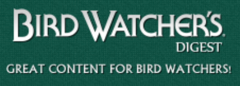
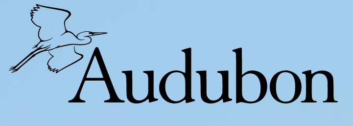
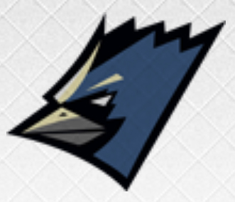
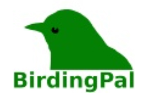

Our Top Picks
Other bird watching friends we think you should see!
Birds of Utah

"Here you will find a bunch of great bird watching locations all around the Utah valley. From Logan all the way down to St. George there is a bound to be a spot you can drive off the unbeaten path and just emerse yourself in the wonder that is nature and be captivated by the majestic birds."
Learn More...Bird Watchers Digest
"If you are looking for a lifelong passion for birds and great publications then look no further because Bird Watchers Digest is just for you. They "provide the best bird magazine in the world." With a claim like that I dont know why you haven't already taken a look at them. They bring out the best of both articles and pictures for your bird information needs."
Learn More...Audubon
"Audubon is a conservation and bird organization that protects birds and the places they live. They have over 41 centers, and 450+ chapters across 23 states. So if you are looking to preserve the wildlife and beauty that the birds need so we can continue to watch the flocks of flying feathers year round, chech them out and donate to the cause."
Learn More...Utah Birders
"What more could you ask for from a group like the Utah Birders. They have the birders blog filled with fun and fascinating info about your local birds. They have the ubird list where you can share and receive information releveant to briding in Utah. You can also get an amazing Utah Birders sticker to put on your car!"
Learn More...Birding Pal
"If you're looking to get out in nature and enjoy the sceneray and you want to go with someone who also wants to enjoy birds. Then Birding Pal is where it is at. You just enter your information and find some people you want to go watch some birds with! Or if you wait a minute, you might find yourself being contacted by one of the fellow bird pals themselves asking if you want to go watch some birds out in nature."
Learn More...Return to Top